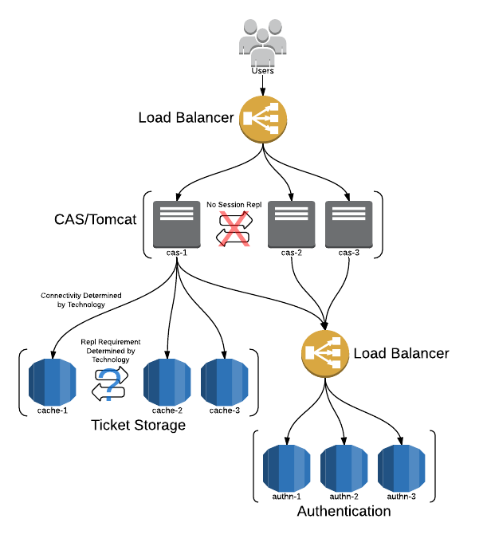

High Availability Guide (HA/Clustering)
A highly available CAS deployment is one that offers resilience in response to various failure modes such that CAS continues to offer SSO services despite failures. We offer a recommended architecture that provides a starting point for planning and executing a CAS deployment that meets institutional performance and availability requirements. It also provides a framework for understanding CAS software component requirements imposed by HA considerations.
A high availability (HA) configuration of CAS is achieved by ensuring there is adequate redundancy so that the service is robust in the face of component failures and that routine maintenance can be done without service downtime. This can be achieved with multi-node and to a lesser degree with single-node CAS with advanced virtual machine capabilities. This document will focus on the CAS Server components required to achieve HA. A more quantitative analysis of HA configuration depends on supporting infrastructure and services and is beyond the scope of this document.
The CAS Server software has had a great track record of being extremely reliable. However, the CAS Server is only a small part of software and hardware that authentication has to traverse to work smoothly. Clustering has typically been used by deployers not only for load handling but also for fail-over. Even if a failure does not occur, it is sometimes desirable to restart a server. For example, if a serious security fix at the operating system level was installed, the server should be restarted immediately. In a cluster of CAS servers, this could be easily accomplished with a rolling restart even during the busiest time.
Operating a single server traditionally would delay such a restart until a less busy time, while running with a known vulnerability. However, more recently with the growing acceptance of virtual machine technology and its inherent redundancy and fault tolerance, single node CAS has been able to achieve similar qualities.
Recommended Architecture
The following diagram highlights the vital aspects of a highly available CAS deployment.

It’s worth pointing out some important characteristics of this architecture:
- Dependent systems can tolerate up to N-1 node failures. (Where N is the total number of nodes.)
- CAS itself can tolerate up to N-1 node failures.
- Loss of a cache node DOES NOT cause loss of SSO state data (i.e. tickets) in replicating caches.
- Loss of a cache node MAY cause loss of SSO state data in non-replicating caches (e.g. memcached).
- Loss of SSO state data is always graceful: users re-authenticate.
Before proceeding into a detailed discussion of various aspects of the recommended architecture, we offer a guiding principle for planning a highly available deployment:
Design the simplest solution that meets performance and availability requirements.
Experience has shown that simplicity is a vital system characteristic of successful and robust HA deployments. Strive for simplicity and you will be well served.
Deployment Scenarios
Single-node CAS, HA VM Infrastructure
High availability can be achieved by implementing a single-node CAS running in a sophisticated virtualized environment. This approach to high availability is attractive in the sense that it simplifies the CAS server configuration but requires hardware virtualization technology that may not be present and available.
Physical Architecture
In a single-node VM architecture, the CAS server, along with the necessary prerequisites and software dependencies is deployed in a single host VM. Under this deployment scenario the default in-memory Ticket Registry is sufficient and no Servlet Session replication is required. This simplifies the deployment configuration and is the recommended approach if the VM infrastructure is sufficient to meet HA and scalability needs.
Robustness
Hardware component failure/recovery is a feature of the virtualized environment such that the loss of a CPU, memory or power does not cause a failure of the CAS server.
Zero downtime maintenance approach
True zero downtime maintenance (i.e. no observable impact to end users) is not achievable with this configuration.
However, staging of maintenance and upgrades can be done without downtime by leveraging the cloning ability of most
VM infrastructures. Once the new CAS Server node is ready, a brief cutover can be implemented which will effectively
end all current SSO sessions. This could be done by scheduling restart of Tomcat during low traffic times, after the new cas.war has been deployed.
Scalability
CAS itself has modest computing requirements such that any modern enterprise class server hardware is going to be sufficient to handle 10,000s of users in typical deployment scenarios. In a recent client engagement load testing a single node deployment yielded good results with CAS handling 200 concurrent users at 61 requests per second which roughly translates into 108,000 authentication transactions per hour. These number are of course representative and any benchmark will be highly dependent on local infrastructure. VM environments should be able to scale the available CPU and memory to meet a wide range of needs.
Multiple CAS Server Nodes
A highly available CAS deployment is composed of two or more nodes behind a hardware load balancer in either active/passive or active/active mode. In general the former offers simplicity with adequate failover; the latter, improved resource usage and reduced service interruptions at the cost of additional complexity. Active-passive configuration can be done with manual or automatic failover in the case where the primary CAS node fails. Active-active configuration is possible with a clustered ticket registry state such that any available CAS node can service any request for the CAS server. A number of options are available for implementing an active-active configuration with shared ticket state.
HA can be achieved by implementing a multi-node CAS deployment running on multiple VMs or physical hosts. This approach is attractive since it allows true zero down-time maintenance of the service at the cost of a marginal increase in deployment complexity.
Multi-node CAS generally involves the following:
- Installing multiple instances of the CAS server (so that one or more of the servers can be destroyed without the CAS service becoming unavailable)
- Configuring the multiple instances of the CAS server to share ticket state (so that regardless of which CAS server a user or service interacts with, the response from each CAS server is the same.)
- Configuring a solution for directing traffic among the clustered CAS servers, for detecting component failure and removing failed components from service
- Optionally, configuring a solution for sharing session state and session failover across the CAS instances (this isn’t typically appropriate, since end-user CAS sessions tend to be short lived and the experience is more request-response style than it is session oriented) - favor short-lived sticky (aka persistent sessions) load-balancing instead (could be a problem with large NAT deployments)
- Having appropriate contingency plans such that the desired margin of headroom against failure is restored when it is exercised. (For example, having three CAS server instances, clustered, serving a load that can be serviced with just two instances.)
Physical Architecture
The physical architecture may be realized through VMs or physical hardware. It is important to note that in a shared ticket state model (Active/Active mode), CAS server nodes need to be able to communicate tickets state across all nodes and as such, firewall restrictions between such nodes needs to be relaxed enough to allow for ticket state replication.
The service endpoint is a virtual IP address configured at the load balancer. Thus all requests are handled by the load balancer and then routed to available CAS nodes.
Robustness
In the event of a CAS node failure, the work load and authentication requests can properly be rerouted to another CAS node. It is possible that through the failover scenario, some state may be lost depending on where the user is in the login flow and as such, once the rerouting of the request has landed from the failed node to the clone, users may need be presented with the CAS login screen again. This failure mode can be eliminated with Servlet session state replication.
Zero downtime maintenance approach
Maintenance work, such that it would include upgrades and application of patches to the software may be carried out via two general approaches:
-
In active-passive models, work may be carried out offline on the passive CAS node. The load balancer is then tweaked to switch over the prepared node once ready thereby switching the active-passive nodes around. This results in all CAS SSO sessions being reset and possibly some Ticket validation failures if done during times with high utilization. See below for more details on this approach.
-
In active-active models, one node can be taken offline while at least one other CAS server node remains alive to respond to requests. Once the upgrade procedure is done, the server can return to the pool while obtaining the ticket state from other active nodes. Certain distributed ticket registry models have the ability to bootstrap themselves by receiving ticket data from other nodes without any manual configuration or adjustment. See below for more details on this approach.
Scalability
Scalability is achieved by adding new CAS nodes to the cluster.
Active/Passive Mode
In an active/passive load balanced configuration, 1 of N nodes serves all requests at any given time. This simplifies ticket storage requirements since it is not necessary to share ticket state among several application nodes.
In particular, the default ticket registry component that stores tickets in memory is suitable for active/failover setups with the understanding that a node failure would result in ticket loss. It’s worth repeating that ticket loss results in graceful application failure where users re-authenticate to CAS to create new SSO sessions; CAS client sessions created under previous SSO sessions would suffer no interruption or loss of data.
Active/Active Mode
A load balancer in active/active mode serves requests to all N nodes simultaneously. The load balancer chooses a node to serve a request based on a configured algorithm; typically least active or round robin. In this system architecture, it is vitally important to use a ticket store where a ticket can be located regardless of which CAS node requests it.
It’s instructive to discuss the origin of this requirement. There are two interactions for tickets that occur from fundamentally different network sources:
- User’s Web browser contacts CAS to generate a ticket.
- Target service contacts CAS with a ticket to validate it.
Since both requests flow through the load balancer from different source addresses, it is not possible to guarantee that both requests are serviced by the same CAS node. Thus the requirement that a ticket be locatable regardless of the CAS node that requests it. It should be clear why in-memory storage is not suitable for active/active deployments.
The active-active architecture allows for a zero down-time transitions between CAS server versions at the time of upgrades. One CAS node instance can be taken offline, undergo maintenance, and then be put back into the production. The same strategy is then repeated for all other CAS nodes.
There is a further consideration for active/active deployments: session affinity. Session affinity is a feature of most load balancer equipment where the device performs state management for incoming requests and routes a client to the same node for subsequent requests for a period of time. This feature is no longer required by default as CAS is able to maintain state for the CAS login/logout webflows directly on the client-side. Additional options are however provided to allow for servlet container session storage to be used with replication options if necessary. See this guide to learn more.
Avoid Round Robin DNS
We strongly recommend avoiding round robin DNS as a cost-effective alternative to a hardware load balancer. Client cache expiration policy is entirely uncontrollable, and typical cache expiration times are much longer than desirable periods for node failover. A reverse proxy or software load balancer are recommended alternatives to hardware.
HA Ticket Registry
The following ticket storage components provide the best tradeoff among ease of use, scalability, and fault tolerance and are suitable for both active/passive and active/active setups.
The particular choice of storage technology should be driven by infrastructure and expertise as much as performance and availability considerations. It’s hardly valuable to have a high-performance storage for which you lack the expertise to troubleshoot when problems invariably arise.
The technology considerations of the various storage components merit some discussion since there are notable differences that impact availability and performance characteristics. Cache systems like Ehcache and Hazelcast offer a distributed cache that presents a single, consistent view of entries regardless of the node contacted. Distributed caches rely on replication to provide for consistency. Cache systems like memcached store the ticket on exactly 1 node and use a deterministic algorithm to locate the node containing the ticket:
1
N' = f(h(T), N1, N2, N3, ... Nm)
where h(T) is the hash of the ticket ID, N1 … Nm is the set of cache nodes, and N’ is member of N … Nm.
These sorts of cache systems do not require replication and generally provide for simplicity at the expense of some durability.
Secure Cache Replication
A number of cache-based ticket registries support secure replication of ticket data across the wire, so that tickets are encrypted and signed on replication attempts to prevent sniffing and eavesdrops. See this guide for more info.
Distributing Service Definitions
In an HA environment, service definitions must be replicated and accessible by all nodes in the CAS cluster. Typically, this may be achieved by leveraging centralized registry implementations that are backed by JPA, LDAP, MongoDb, etc. Registries that are backed by the file system need to devise a process of ensuring proper file replication, either manually or via a background daemon.
Connection Pooling
We strongly recommend that all IO connections to a back-end data stores, such as LDAP directories and databases, leverage connection pooling where possible. It makes the best use of computational (especially for SSL/TLS connections) and IO resources while providing the best performance characteristics.
Monitoring
CAS adopters typically implement monitoring of the availability of the CAS service using the tools already in use in operational practice for monitoring other enterprise web applications. CAS introduces a new modest monitoring page with authentication by default by the remote_address of the requestor.
Channel Confidentiality
Channel Confidentiality (via SSL/TLS) is assumed and critical to the security posture of the CAS system. This includes both front-channel (between user browser-agent and CAS server) and back-channel (between web application and CAS server) https traffic, any intermediate proxy traffic between load balancers or content filters and CAS nodes, as well as primary authentication (e.g. LDAPS) and attribute resolution (JDBC over SSL). Any break in the privacy controls at any stage comprises the overall security of the system.
Upgrades
CAS server upgrades should be carried out through the recommended WAR overlay approach. Established as a best
practice, the overlay approach allows one to seamlessly obtain the intended CAS server version from well
known and public repositories while laying custom changes specific on top of the downloaded binary artifact.
In the specifics of the overlay approach, it may also be desirable to externalize the configuration
outside of the cas.war so that the properties and logging configuration can vary across tiers for the same cas.war file.
That is, externalizing the environment-specific configuration allows the same cas.war to be promoted from server to server
and tier to tier, which increases the confidence that the web application that was tested and verified out of production will behave as tested in production.